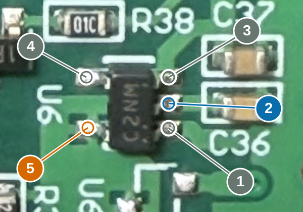
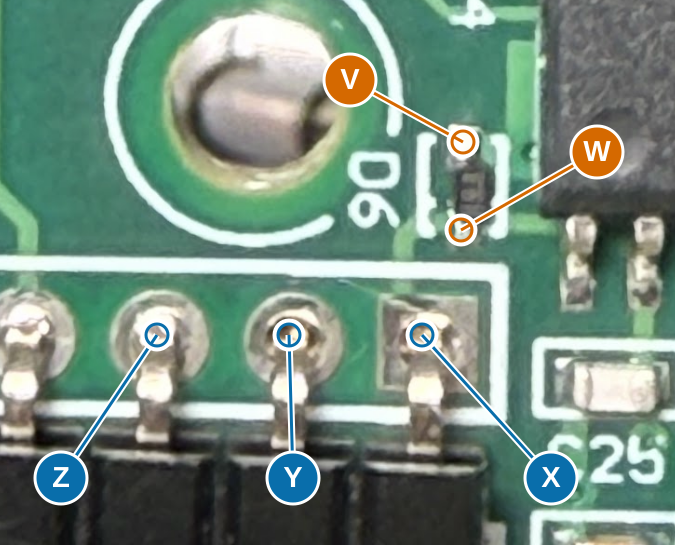

Finish the schematic, one useful batch at a time
The connections are not all resolved yet. This page separates your next bench work from the later value and documentation work.
U6: one hidden join; D6: two unknown destinations
Battery and programmer disconnected; allow capacitors to discharge. Resistance mode. Note the shorted-probe baseline; report actual ohms, kohms, Mohms, OL or changing readings. Do not bridge or desolder anything in this batch.
Start with the single U6 check, then D6. Your U6 annotation replaces the broader NC-pad tests. Touch the centre of each small ring, not the large label. Record actual resistance, not just a continuity beep. The PCB and photographs remain in the orientation shown.
1. U6: does pin 5 join VIN under the chip?
Your annotation shows pin 4 unused, pin 5 reaching the upper end of R37 and the single pad of empty U6A, pin 3 reaching the PIR supply, pin 2 reaching C36, and pin 1 at GND. Only the hidden pin 5-to-pin 2 join remains in this batch. Numbers are package pins; grey labels give orientation only. The current R37-to-VIN connection is an older hypothesis, so it must not be used as proof of this join.

- 4 - U6 pin 4 / L1: upper pad on the two-pad side (orientation only; no measurement)
- 5 - U6 pin 5 / L2: lower pad on the two-pad side
- 3 - U6 pin 3 / R1: upper-right pad, candidate VOUT (orientation only; no measurement)
- 2 - U6 pin 2 / R2: middle-right pad, candidate VIN
- 1 - U6 pin 1 / R3: lower-right pad, candidate GND (orientation only; no measurement)
Open original photoCopy results into chat
2. D6 beside PIC U4 and the programming connector J1
Measure each D6 end against the three nearby connector nodes. The paths disappear near/under U4, so the photographs alone do not establish their destinations. Keep V and W as physical end names; do not assign diode pin numbers from these labels.

- V - D6 upper metal end in this photo
- W - D6 lower metal end, nearer J1
- X - J1 pin 1 / VPP: rightmost square solder pad
- Y - J1 pin 2 / VDD: second pad from the right
- Z - J1 pin 3 / GND: middle pad
Open original photoCopy results into chat
Circles identify probe contacts; coloured leaders are annotations, not copper traces. Photos retain their original orientation. Each letter names a physical contact, not a signal name. Candidate measurements are not assumed connections.
A stable reading close to the shorted-probe baseline supports a copper join. kohms, Mohms, OL or changing readings do not establish a wire. These are routing checks, not diode-voltage or capacitor-value measurements. OL to a few references does not by itself prove an unused pad; a no-connect decision also needs copper inspection.
TP9: no physical location established
You reported: I cannot find TP9.
TP9 has no established physical location. Possible inherited inventory error; absence is not yet proven. Do not nominate a random hole or ask continuity checks for it. Agent must audit the entry before removing it from the model.
No TP9 measurement requested. Native TP9 remains pending inventory audit; the five-open-entry count includes this unlocated entry.
Latest U6 evidence
Your annotated U6 photo replaces the proposed broad NC-pad checks. Pin 4 is reported unused; pin 5 reaches R37 and the single U6A pad. The only requested U6 check is pin 5 to pin 2.
S-812C datasheet Rev.7.0_01, page 11, Table 5: pin4 NC; pin5 NC for A/E variants. Electrically open internally; external connection to VIN or VSS is allowed. Pin numbering checked against Figure 5 and the existing physical crosswalk. Local datasheet, page 11.
Recorded for reconciliation; native schematic not changed by measurement-screen preparation.
Current picture
ERC: 25 findings = 5 open populated-entry pads + 13 open pads on empty options + 2 isolated labels + 5 power-source warnings. Power-source declarations require established supply paths; empty pads require copper review before an NC decision.
5 populated-entry pads still have no modeled connection: D6.1, D6.2, TP9.1, U6.L1, U6.L2. Of these, U6's two pads are candidate internal-NC pins whose external copper remains unverified. Another 13 pads are on empty options.
There are also incomplete routes despite wires already being drawn: receiver feedback/output, RF excitation and antenna continuations, R41/D1 and some PIC test-point branches. Zero open PIC pads is not proof that every signal path is complete.
44 ceramic values and L1/L2 type/value remain unrecovered. 147/150 candidate footprints are assigned; C5, S1 and LED1 still need geometry. The complete checklist preserves the details.
Measurements recorded
B18 TP16-TP11 and B19 TP16-TP17 each read 400 kohm. B21 TP16-VREF reads 0.8 Mohm. User identifies PIC21/RB0 as TP16/Q2.S destination and explicitly withdraws PIC21-VREF. U7.1/2/3 map to J3.3/2/1. These updates are applied in the schematic. v0.9.17 user-annotated photo: C25 right pad/model1 -> PIC2/RA0; C26 right pad/model1 -> PIC3/RA1. Left pads/model2 are common, retaining earlier V029-GND evidence. No new numeric resistance or capacitance supplied. C26 joins the existing RA1/R28/R29/TP7 net, separate from RA0 and VREF. C6 now parallels C5 by photo-supported reconstruction; value unknown.
All recorded readings
| ID | Previous contacts | Recorded result |
|---|
| B01 | A - B
U3 pin 5: upper-right lead in this photo to R23 left metal end in this photo | 270-289 kohm (shared range) |
| B02 | A - C
U3 pin 5: upper-right lead in this photo to R23 right metal end in this photo | 270-289 kohm (shared range) |
| B03 | A - D
U3 pin 5: upper-right lead in this photo to R22 left metal end in this photo | 1 ohm |
| B04 | A - E
U3 pin 5: upper-right lead in this photo to R22 right metal end in this photo | 10 kohm |
| B05 | A - F
U3 pin 5: upper-right lead in this photo to Printed VREF test point | 1 ohm |
| B06 | G - H
Printed GND test point to J3 pin 2, middle solder terminal | 290 kohm |
| B07 | G - I
Printed GND test point to J3 pin 3, left terminal in this photo | 1 ohm |
| B08 | H - J
J3 pin 2, middle solder terminal to R38 left metal end in this photo, nearer Q2 | 10 kohm |
| B09 | H - K
J3 pin 2, middle solder terminal to R38 right metal end in this photo, nearer C37 | 1 ohm |
| B10 | L - B
U3 pin 6: second lead from the right on the upper row in this photo to R23 left metal end in this photo | 1 ohm |
| B11 | L - C
U3 pin 6: second lead from the right on the upper row in this photo to R23 right metal end in this photo | 5.6 kohm |
| B12 | E - G
R22 right metal end in this photo to Printed GND test point | 1 ohm |
| X01 | L - E
U3 pin 6: second lead from the right on the upper row in this photo to R22 right metal end in this photo | 400 kohm |
| B13 | C - M
R23 right metal end in this photo to C18 left metal end in this photo | 300 kohm |
| B14 | C - N
R23 right metal end in this photo to C18 right metal end in this photo | 400 kohm |
| B15 | C - O
R23 right metal end in this photo to TP6 plated hole below and left of U3 | 600 kohm |
| B16 | C - P
R23 right metal end in this photo to C40 lower metal end in this photo, facing R42 | 1 ohm |
| B17 | C - Q
R23 right metal end in this photo to R42 upper metal end in this photo, facing C40 | 1 ohm |
| B18 | R - S
TP16 plated test hole below Q2, above R39; keep one probe here to TP11 plated test hole beside the PIC; local trace reaches pin 14 / RC3 | 400 kohm |
| B19 | R - T
TP16 plated test hole below Q2, above R39; keep one probe here to TP17 plated test hole above C32; local trace reaches pin 18 / RC7 | 400 kohm |
| B21 | R - F
TP16 plated test hole below Q2, above R39; keep one probe here to Printed VREF test point | 0.8 Mohm; user explicitly withdraws PIC21-VREF |
What follows this batch
- 1. Finish signal paths
Agent completes visible copper tracing, removes unsupported assumptions and checks via matches. Priorities: receiver output, RF excitation, tuning-cell topology and the switch contact ambiguity. Only unresolved hidden destinations or behavior will be sent for targeted measurements.
- 2. Recover values
Use the LCR meter for frequency-sensitive antenna, RF shaping and receiver capacitors first. In-circuit parallel networks give effective values; isolate a lead only if needed for individual values. L1/L2 type and value also remain unresolved. Use documented assumptions for noncritical substitutions where justified, not a blanket capacitor value.
- 3. Check operating levels and physical details
Once routing is coherent, make one powered voltage session for the named rails and relevant switched supplies; any waveform question requires suitable waveform measurements. Complete LED/motor/switch orientation checks and the remaining C5/S1/LED1 package dimensions.
- 4. Finalize the one-sheet schematic
Update wires, values, pin maps and footprints; use normal component values with measured/assumed/candidate evidence in properties and the BOM. Remove question marks only when replaced by established information or an explicit justified assumption. Run native KiCad connectivity/ERC and inspect the final sheet. Exact unknown manufacturer identity can remain documented without blocking a compatible functional reconstruction.
The 13 open pads on empty options are recorded but are lower priority unless they affect a fitted net. U6's two candidate internal-NC pins need external-copper inspection, not an invented no-connect flag. Firmware, daughterboard internals and routed PCB are separate from main-board schematic completion.
Already done; do not repeat: D2 directed diode tests or its local/rail checks; D3/V082 rail checks; Confirmed PIC/via connections; Seven rejected capacitor-midpoint pairs; Completed B01-B07: U3 pin5 to R22/R23/VREF and J3 pins2/3 to GND; Completed B08-B12 and X01: J3-R38, U3 pin6-R23, R22-GND, U3 pin6-R22 E; Completed B13-B15: R23 C to C18 M/N and TP6 O; 300k/400k/600k exclude direct joins; Completed B16-B17: R23 C-C40 P and R23 C-R42 Q, both 1 ohm; clear surface trace; B18/B19 TP16 to TP11/TP17: both 400 kohm, direct joins rejected; U7-to-J3: all three corresponding physical columns reported connected; B21 TP16-VREF 0.8 Mohm; PIC21-VREF explicitly withdrawn; PIC21-TP16/Q2 confirmed; C25/C26 local routing resolved from user annotation; no additional continuity test requested.; C6-C5 local parallel connection adopted from photos; no new meter request. Q8 path remains separately qualified..
Based on schematic v0.9.18, 2026-10-09. Completed measurements are recorded above; later checks depend on the new results. A fully measured original and a reconstruction with documented component assumptions are distinct results.